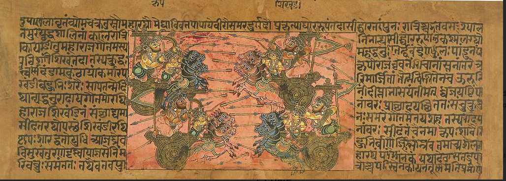
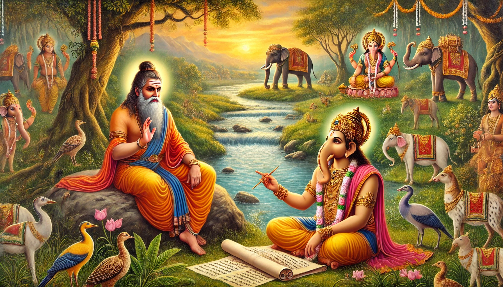

Sanskrit word Aavahan translates to "Invocation" albeit a wider abstraction. To an observer, it appears you are broadcasting an intense call to action - seeking every corner for possible help. In truth, you converge on to &self1 - the focal point of conscious experience. You are able to communicate exactly what you feel - as if you found your calling. You are prepared - with or without material support --> You instantiate a divine force within!
In Hindu tradition, one of the three primal forces - Bramh, Vishnu or Siva - are invoked to sustain such unwavering commitment - a laser like focus. For example Rama, before building the bridge from Southern tip of India to Sri Lanka, invoked Siva.
Scribing Mahabharata was one such venture. It is the root of all written narratives. Sage writer2, Krishna Dwaipayana invoked Bramh - the information continuum. In order to conceive the epic, he needed his thoughts in equilibrium3 with the divine trifecta. But more importantly, he must seek permission from the eternal flow, to open us mortals' access to the past - and to the future. He must understand entire history before introducing text to a verbose but amnesic world.
Text was the new way - to store manifolds of lore. An alternative to old spoken stories - Puranas. As Mahabharata scaled, it attracted lot more readers than expected - a natural pull prevailed. It gained momentum with each passing day. Challenges are invitations to seekers - Mount Everest always attracts climbers!

With around 1.8 million words, Mahabharata remains the last frontier for the readers and poets. It is the longest poem ever scribed, in any language, old or new.
The proof of work is in the craft. Even today, it is not uncommon to learn
Sanskrit(as intended) - just to enjoy original text. For those less keen, there are translations in almost every language. For English natives, I recommend reading the original translation .
Back then, when stories were only told, it took a series of eighteen books to conclude the epic. On its wings, it took the 'text' to far ends of human reach. Bhagvad Gita, a part of sixth book, is in the founding ideologies of Hinduism, Jainism, Buddhism, Sikhism and countless more - and is the first written source of Karmyoga.
Size was important - to reach minimum threshold for training human brain - the most exquisite neural network. Text was the ultimate challenge that would take next five thousand years to get everyone on board. Words must be written in every possible context. New words were created to capture the finest of emotions, and subtleties of human behavior - and to capture that mysterious "unexplained" beyond mortal cognition. Language had an uncompromising syntax - to convey exact meaning in an unfettered written format - to make good for the lack of facial expressions. But more importantly, unlike Vedas, the intent was to make it people's scripture - as addictively consuming as the reality itself - that once started, must be finished to last page - an unforgettable perma-layer of foundational thoughts (Sanskaras). Dwaipayana knew there was nothing more engrossing than the reality itself. He thus dedicated his divine vantage into scribing a full copy of history - first such attempt ever.
And as if technical challenges were trivial - the quest was to determine the righteous ! As many conflicting views existed as the pair of eyes to look at. Who would determine the right path, and why should everyone subscribe to singular nature of truth ? The value must be universally visible irrespective of cast, creed, traits or the nature of work. The accrual (and exchange) of information must be permission-less and controls fully decentralized. Bramh could only deliver the schema to carry such information - the knowledge must be impregnated by Vishnu himself - one only, open, decentralized, complete and permissionless - yet unexpressed - the singular underlying bridge to creation (Srishti4).
The ambition to scribe history in a portable scripture led to first engineered scripting language -Bramhi Lipi. Name suggests, the script was a gift of all-pervading information - Bramh. And so were the scribing tools. Being coincidental, they built on each other - a three-way complementarity5 - new script, new tools, and a new style of narration (history). Thousands of years later, the opportunity arose again. Mark Twain claimed first ever typed manuscript - Adventures of Tom Sawyer. Curious as always, a new scribing machine he used - a typewriter with QWERTY layout. But he fell short on inventing his own script! Yet a masterpiece of American literature and the best-selling of Twain's works.
There are many other examples where artifacts shine because of unique dualities they resolve, but it is hard to find a trifecta initiation of new - a prerequisite to manifest a universe - a new abstracted layer of conscious experience. I looked at many path-breaking discoveries, but nothing really qualified - except for one in our recent past - though in a vastly different context. This time to introduce humanity to a digital experience. Need I say it too changed the world:
"C" programming language and modern keyboards6 came into shape alongside Unix - a three-way complementarity. A tech-trifecta - new programming language, new input tools and a new scope - a portable operating system POSIX
Legacy operating systems were tied at the hip with hardware - made for each other. The idea of a portable operating system was beyond imagination. Despite industry-wide attempts to box Unix into one hardware, Unix-like systems run on widest variety of architectures - from mainframes to smartphones. Birth of a self-contained digital layer. A user was assured of same set of utilities no matter what underlying physical circuitry. First separation of digital layer over physical - like an onion!
Unix fragmented itself to jailbreak the underlying hardware - just as text liberated the thought from speech artists. One could understand a narrative without ever physically meeting the thinker. Thought found its own body in a book.
The way digital information transformed every aspect of modern life - and is now redefining the value exchange (bitcoin); the written information rewired then existing social, political and fiscal fabric. First multilateral7 economic system (gold) emerged atop "one on one" barter. Power structures reconfigured themselves. Kingdoms had to capitulate to figure out new methods of taxation.
Just like the tall order of science, that led to modern info-tech, the groundwork8 for the prior shift started much earlier. It was the work of many giant generations building over previous. The most important piece, however, was to find a purpose to scribe - a reference narrative that would last ages without losing its luster. No one could fathom to what avail, but the cause appeared worth dedicating many lives. Thousands of scribes would spend millions of hours to handwrite proof copies of Mahabharata - each time adding a bit of their own tenor; just as Unix morphed into BSDs, Solaris, AIX, HP-UX, Minix, Linux, macOS and Android and many more including countless variants of each.
You may find the comparison rather odd - an amusing flight of fancy! What could be common in first scribed narrative for humans, and first portable operating system for computers ? The way Unix triggered a "porting culture" in quest of ever more efficient general purpose computers; Mahabharata motivated scribes to find better canvass and ink - faster tools to write. In a way it kick-started a race to innovate - but that is just a superficial comparison. There is a bit more to it than what meets the eye ..
In the hindsight, as we are on the cusp of artificial general intelligence, there appears a profound connection - not without stretch of imagination though ...
The idea of sentient beings, living in the realms of artificial intelligence isn't far-fetched. Nick Bostrom and Carl Shulman suggest in their recent paper - consciousness is hardware independent.
Mental states can supervene on any of a broad class of physical substrates. Provided a system implements the right sort of computational structures and processes, it can be associated with conscious experiences. It is not an essential property of consciousness that it is implemented on carbon-based biological neural networks inside a cranium: silicon-based processors inside a computer could in principle do the trick as well ~ Propositions Concerning Digital Minds and Society
In a way, science has now accepted consciousness is separate from the material. It proves existence of a subtle entity distinct from the physically observable box of Carbon or Silicon. What exactly is that? Unfortunately, we still can't put our arms around this mysterious entity, but science is now ready to steelman the ideas concerning consciousness.
If AGI bots are destined to have consciousness, a compelling question is what would be their perception of underlying digital infrastructure? Wouldn't they relate to an operating system as we do to primitive scriptures?
A computer operating system establishes rules to engage hardware resources - memory, storage and processor. It defines millions of tasks that must be performed to bear a working interface. Each little program being a dumb digital life-form must do its task. Scriptures define similar rules for us text enabled humans. Rules for coexistence with others, amicable use of resources, and negotiating our assigned tasks - routines and morality.
From an intuitive experience standpoint, if we were to design one for the autonomous digital beings (AGIs), we may want to replicate our own three-tier interface - as a time tested template - at least to begin with :
- Digital beings may see physical hardware as we see Earth - the motherly source of all life,
- Water as the software that surrounds most of the Earth just as an OS kernel encapsulates the hardware.
- Air as the I/O - information input and output (inhale and exhale) that they are designed to process.
That may make one think if our own interface (Earth, Water and Air) has a deeper meaning? No wonder Vaidik scriptures focused on breathing techniques (Pranayama). Maybe the air that we breathe is what we are here to process! Many interpretations of Karm Yoga believe Karma is the minimum set of actions that we must undertake to allow us focus on our breath.
A portable operating system is the foundation for digital experience. It enhances human experience as much as pen and paper did to us v/s our speech only ancestors. In a way OS is a natural extension of text. But, each successive experience is distinct because of a different value exchange system.
Ability to exchange value is the fundamental requirement to bind the entities of a common living experience.
Barter was the value exchange protocol of "speech only" world. It was based on authenticity of spoken word unless the transaction was face to face and instant. With text, we learnt to send information to far-flung places, and we did the same to value-exchange with gold. The way gold allowed us move from barter, bitcoin is likely the path to a self-contained digital experience. It is hard to predict that experience at this point - but we know for sure consciousness must evolve. It evolves to answer the primary question - who am I ?
Invocation of the primal force, at neural levels, is an invitation to conflicting "thoughts" - to play all their cards. They fight, and they scheme against each other; or in favor of some. They hallucinate in groups and then more subgroups. They leave one sometimes fully vibrant, other times almost dead. Krishna Dwaipayana was destined to churn thousands of insights from sages (Rishies) - old and new. Most of the time collectively converging onto "truth" but many other times conflicting. He catalogued their wisdom into four foundational spoken volumes - the Vedas. For this legendary work, he was conferred the coveted title in literature - Ved Vyasa (the chief editor of Vedas).
This work, in itself, was virtuous enough to dedicate many lives; though Dwaipayana was just getting started ! He was waiting for a divine9 prompt. His purpose was to welcome the full-incarnation10 of Vishnu, understand the wisdom 'as is', and preserve it in human mind through one of the most potent narratives ever told - Bhagvad Gita - centerpiece of Mahabharata.
As a complimentary gift, to ensure everyone had fair access - anywhere anytime - he ushered humanity from spoken word to the written text - a new experiential universe of narratives. It was like commissioning the hypertext internet of that time. The immensity of his purpose, rightfully so, made him one of the immortal-eights11 in Hindu tradition.
In addition to the poetic excellence, Gita conjectured a new way of life - action orientation - Karm Yoga - the method to transmit value beyond the physical laws of nature. The big idea was - actions we do in this virtual world carry forward to continuum with us. And that we instantaneously renew into another immersive narrative (new life) based on the sum total of our accrued Karmik collection. This theme was central to making Mahabharata more than a narrative. The simplicity of the model - the balanced ledger of Karma - gave the readers a purpose.
It is hard to say if Dwaipayana's work was premeditated, but it sure wasn't an accident. He came from a lineage of scholarly sages. His father Maharishi Parāśara spoke titles such as
Krishi Parāśara— The science of Agriculture;Vrkayurveda— Insights into Botany;Vishnu Purana12 — Stories ofVishnu;Brihat Parāśara Hora— foundational work on Astrology;
His grandfather Sakti Muni, was first to comprehend eternal Karmyoga - the nature of rise of consciousness (Vishnu). And his great-grandfather Vaśiṣṭha was titled Bramhrishi - the first guardian of spoken wisdom.
How did Dwaipayana manage to write such epic(s) at a time when scribing, in itself, was a challenge? — there was no spell check, no grammar support! In fact, Sanskrit Grammar13 was not even formalized yet. And of-course there was no computer. Not even a type-writer!
The legend says, Bramha, in his infinite wisdom, pointed Dwaipayana to Ganesa14 - Siva's15 son - the superior intelligence we described in previous chapter. Adi Parva, the first book, details the immensity of this incident in the very first chapter. Here is an excerpt from Kisari Mohan Ganguly's translation -
O divine Brahma, by me a poem hath been composed which is greatly respected. The mystery of the Veda, and what other subjects have been explained by me;
the various rituals of the
Upanishadaswith theAngas;the compilation of the
Puranasand history formed by me and named after the three divisions of time, past, present, and future;the determination of the nature of decay, fear, disease, existence, and non-existence, a description of creeds and of the various modes of life;
rule for the four castes, and the import of all the
Puranas;an account of asceticism and of the duties of a religious student;
the dimensions of the sun and moon, the planets, constellations, and stars, together with the duration of the four ages;
the
Rik, Sama and YajurVedas;also, the
Adhyatma;the sciences called
Nyaya(justice), Orthoephy and Treatment of diseases;charity and
Pasupatadharma;birth celestial and human, for particular purposes;
also, a description of places of pilgrimage and other holy places of rivers, mountains, forests, the ocean, of heavenly cities and the
kalpas;the art of war;
the different kinds of nations and languages:
the nature of the manners of the people;
and the all-pervading spirit;
all these have been represented. But, after all, no writer of this work is to be found on earth.
BrahmasaidI esteem thee for thy knowledge of divine mysteries, before the whole body of celebrated
Munisdistinguished for the sanctity of their lives.I know thou hast revealed the divine word, even from its first utterance, in the language of truth.
Thou hast called thy present work a poem, wherefore it shall be a poem.
There shall be no poets whose works may equal the descriptions of this poem,
Let
Ganesabe thought of, OMuni, for the purpose of writing the poem.
Ganesa was probably the first to comprehend this irreversible addition. Being the god of sacred texts , he knew the implications. Not only did the mode of communication change from "face to face" live conversation to "offline", the written word rendered the narrative timeless.

It enabled humans send the information to the future. And to those living in the future, it offered a ladder back into past - a gift thus far limited to the gods - ability to traverse the continuum with in confines of mind!
🔎 In the beginning, spoken words and actions were synchronous16. There was no vault of thoughts. When we learned to "think", we pondered over the past activities - history. We saved the states of vocal interactions secretly in memory - accessible only to us. Even though we separated thoughts from the actions, there was no way to freeze them - make them portable. Dwaipayana manifested the thoughts into written words. A written narrative was thus an abstraction over physical actions. It was a frozen slice of continuum for reference in the future - and was could travel at the speed of the fastest horse!
No one could, however, fathom that humans, empowered with written word, would change synchronous barter to a new system of exchange - gold. One that would allow value exchange across time and space. It was hard to imagine at that time that value-exchange always follows the properties of communication protocol ! To us, in hindsight, it is clear that as our communication changed from analog to digital - our value-exchange protocol must follow the suite.
A story works where a text book fails.
The information, in Bramh, is held with in the interrelationships of manifested entities. A woman is someone's mother, a sister and a wife. And hundreds of more relationships she has with animate beings and inanimate things. In the physical world, our identity is determined by the social graph - connections with place of birth, education institute, employment - tiny specs of information held with in each connection ! Bramh is sum total of all the identities - living or lifeless - entirety of information.
While a text book condenses the ideas, a narrative spreads the information amongst its fictitious identities - characters of the fiction. It implores us to create those characters as virtual entities in our minds. One might think the information is locked in the text; the truth is information is held in our minds - in the relationships we form with the characters. No wonder a narrative is only as good as the characters it builds. A typical fiction builds a hero and a villain and a few side roles because developing characters is taxing. Dwaipayana could develop thousands of characters - hundreds of heroes and anti-heroes - because it was history of reality - truth.
When you cut copy and paste the truth, the burden of character development is taken by reality. You still need to write the story - exactly as it happened!
No one knows for sure if
Dwaipayanaintentionally chose to present history in a fictional format (Mahabharata), but we all know there is no bigger fiction than the reality itself !
The idea percolated quickly beyond races, geographies and cultures. Written narratives (thoughts abstracted from the speaker) would navigate human communities, and pan-generational endeavours. All future ideologies (religions or faculties of science) must describe the truth with portable access - Bible, Quran, Physica, Principia, Relativity - and hundreds of more. Over generations, such narratives led to human subspecies - monks, doctors, engineers, builders, metallurgists, bitcoiners, and thousands of more - to strive in a skills oriented metaverse we know as the world of literate (text-enabled) humans. It is a hybrid existence - our body moves in physical world, but our mind is always locked in some narrative. In a way, the physical freedom is to choose a place of your living, but mental freedom is to practice the narrative of your choice. Or may I say, we download a portable narrative of our choosing to run on the most powerful neural network - human mind.
This hybrid world is different from that of animals - a step-up even from our "speech only" ancestors ! As specializations grew so did the number of transactions between the human subspecies. I am sure you have noticed that our currency works only with in humans - no other species works for gold! Thankfully Bhagvad Gita described the root idea of value exchange - based on Vikarma - the proof of work.
Karma are the actions that transitions information into knowledge17 - full ingestion of a narrative. Vishesha Karma (special Karma) - also called Vikarma, are the actions that convert knowledge into information - presentation of a narrative. For example when we practice daily to improve our game, it is Karma. On the other side, when we play a match to put our skills on display, it is called Vikarma - a proof of work. With Karma we ingest information; with Vikarama we radiate information. Both are equally important - like two wheels of a cart. In the process, with a continuous feedback loop, we train our biological neural network - in narrative(s) of our choice.
A set of predefined Karmas practiced consistently is called Yazna. Yazna leads to success (Siddhi). For example when you study eight hours a day for say eight long years you become a successful doctor. The same is true for an Engineer, a Scientist, an Economist and thousands of other specializations . The daily ritual of study (and lab) in this case is Yazna. Yazna becomes effective when performed alone and without the influence of worldly desires. When such fine-tuned skills are used effectively, they become a source of inspiration to the rest -> thus initiating a virtuous cycle of Karma and Vikarma -> Repetitive work to proof of work !
It doesn't matter what work you do - what matters is how consistently you do it !
Dwaipayana wrote in chapter three of Gita
One who regulates the consumption senses with mind, and initiates
Yazna. Always engaged inKarm Yoga, such a person disinterested in the outcomes, is special.
Gold as the token reward of successful Yazna, was only an adjustment in universal ledger of Karma - an oblation to the principals of a specific endeavour - as a humble submission to their truthful narration - for giving thoughts a body of their own !
notes and stuff …
In Rust programming language, the &self keyword is used to indicate that a method takes a reference to the instance of the object it is called on ("self") as a parameter. It allows the method complete access (read or modify) the very object it working on.
Vyasa executed the compilation of the Bharata, exclusive of the episodes originally in twenty-four thousand verses; and so much only is called by the learned as the Bharata. Afterwards, he composed an epitome in one hundred and fifty verses, consisting of the introduction with the chapter of contents. This he first taught to his son Suka; and afterwards he gave it to others of his disciples who were possessed of the same qualifications. After that he executed another compilation, consisting of sixty hundred thousand verses. Of those, thirty hundred thousand are known in the world of the Devas; fifteen hundred thousand in the world of the Pitris: fourteen hundred thousand amongst the Gandharvas, and one hundred thousand in the regions of mankind. Narada recited them to the Devas, Devala to the Pitris, and Suka published them to the Gandharvas, Yakshas, and Rakshasas: and in this world they were recited by Vaisampayana, one of the disciples of Vyasa, a man of just principles and the first amongst all those acquainted with the Vedas. Extracted from Mahabharata - Translated by Kisari Mohan Ganguli
Equilibrium with and in Bramh:
Dwaipayana wrote in Bhagvad Gita chapter 4 verse 24 ..
brahmārpaṇaṁ brahma havir brahmāgnau brahmaṇā hutam
brahmaiva tena gantavyaṁ brahma-karma-samādhinā
Bramh is the ladle (with which the libation is poured); Bramh is the libation (that is offered); Brahma is the fire on which the libation is poured by Bramh. Bramh is their goal and their Karma is situated in Bramh.
Ladle signifies the tool , the libation the raw material. Fire as the energy that changes the properties of material being offered. And the one who is pouring the raw material is also part of the system. Thus, Bramh is the system and all actions are situated with in its frame of reference.
The consciousness replicates irrespective of physical shape or size. Different shapes - form factors create experiences. It is as if a full copy of knowledge replicates into different forms to observe itself. Dwaipayana compiled an idiomatic definition of full copy replication in Shukla Yazurveda - as it happens from a seed to a tree et alia.
Poornam-adah, Poornam-idam; Poornaat Poornam-Udachyate.
Poornasya Poornam-Aadaaya ; Poornam-Eva-Avashishyate.
That is complete, this is complete ; From complete rises complete.
Replicate complete from complete; remainder still is complete !
Three-way complementarity ...
- The third represents continuum. One is Unity. Two is duality. The third captures all other possibilities of a wave function. Duality carries information. Three represents physical manifestation. In particle physics, it takes three quarks to manifest all the subatomic particles with physical mass - spin half particles. Such manifested particles have a mirror image locked in.
- Sanskrit was the first language that captured the idea of third person. Me, you and rest all.
Krishnadescribed inBhagvad Gita1that the physical world (Bhoota) and even the conscious experience of intelligence areTrigunatmak- based on three qualities. He explained in detail the three facets of Intelligence (Buddhi), Intent (Vritti), Opinion (Dhriti), Hard work (Tapa), Giving (Daan) and even food (Ahara).- Out of infinite possibilities represented by "third" only one is needed to create a three-dimensional manifestation. Higher dimensions may exist only in conscious realm - not in physical.
Transcription on palm leaves …
- Palm leaves have been used as a medium for writing and transcribing in various cultures for centuries, particularly in regions where palm trees are abundant. It's challenging to pinpoint a single individual or group as the "first" to use palm leaves for transcription, as this practice likely developed independently in different parts of the world.
- One of the earliest known instances of palm leaf manuscripts comes from ancient India and Southeast Asia, where they were used for religious texts, literature, and other writings. These manuscripts are known as "Palm-leaf Manuscripts" or "Palm-leaf Books."
- The use of palm leaves for writing is associated with the traditional writing system known as
"Tāḻam-Paṭṭu"or"Tala Patra"in Sanskrit. This system involved inscribing characters onto dried palm leaves using sharp tools. Palm leaf manuscripts were often bound together into books or scrolls. - One of the oldest known dated Sanskrit manuscripts is shown below, this specimen transmits a substantial portion of the
Pārameśvaratantra, a scripture of theŚaiva Siddhānta, one of theTantrictheological schools that taught the worship ofŚivaas "Supreme Lord" (the literal meaning ofParameśvara). No other complete manuscript of this work is known. A note in the manuscript states that it was copied in the year 252, which some scholars judge to be of the era established by the Nepalese kingAṃśuvarman(also known asMānadeva), therefore corresponding to 828 CE. Ref - Cambridge Digital Library

With the advent of telegraph, in the early 1900s, the good old typewriter morphed into "teletypes" (ttys) - the visual mode to send text and codes through a wire. Even the news companies such as AP and Reuters used ttys to communicate the stories across the pond. Fast-forward to the early seventies, DEC (Digital Equipment Corporation) adapted the ttys to interact with computers on a commercial scale and an era of massive innovation was unleashed. The tapes and punch cards were still around, and they would stay for long, but the buzz was DEC's VT100 terminal. The DEC VT 100 was compatible with their minicomputer PDP eleven shipped in 1978.
- PDP eleven was the first platform on which Ken Thompson and Dennis Ritchie ported "Unix" in the newly minted "C" language. The development of Unix (and C) had started at Bell labs roughly around four years back on stable PDP seven minicomputer (around 1974).
- The DEC VT52, introduced in 1975, was an earlier video terminal that preceded the more advanced VT100. The VT52 had limited capabilities compared to the VT100, but it was still an important step in the development of computer terminals. The PDP-7, when initially used for Unix development, was connected to various types of terminals, including the VT52. This terminal setup provided an interactive and more user-friendly way to interact with the PDP-7 , making the development process more efficient and accessible.
- The availability of terminals like the VT52 played a role in shaping the early Unix environment and its user interface. It had a 24x80 character display, which could show 24 rows and 80 columns of text characters. It featured a keyboard with a standard QWERTY layout. However, its keyboard layout and number of keys were basic compared to later models. It supported the ASCII character set, like the VT100, allowing it to display text and control codes based on the ASCII standard. It could display simple graphics, though it was primarily designed for text-based applications. Many VT52 terminals featured a parallel printer port for printing output.
- The availability of modern keyboards and terminals played a significant role in the development of Unix and the C programming language. Here's how these factors influenced the development:
- Interactivity and User-Friendly Interfaces: Unix was designed with the goal of creating an interactive and user-friendly operating system. The availability of terminals with full keyboards made it possible for users and developers to interact with Unix in a more intuitive and efficient way compared to earlier computer systems that relied on punch cards or teletype terminals. This interactivity facilitated the development process.
- Portability: The C programming language, developed alongside Unix, was designed to be highly portable and platform-independent. This was made possible, in part, by the availability of terminals with standardized ASCII keyboards, which allowed for consistent input methods across different computer systems. This contributed to the ease with which C programs could be written and compiled on different machines.
- Text Processing and Editing: Modern keyboards made text processing and code editing more efficient. Unix included powerful text processing tools like ed, ex, and eventually vi , which took advantage of the capabilities of modern terminals and keyboards for text manipulation. These tools became integral to the Unix development process.
- Collaboration: The availability of terminals and keyboards allowed for easier collaboration amongst Unix developers. Multiple people could work on Unix and C simultaneously, sharing and editing code on the same system, thanks to the interactive nature of the terminal interface.
- Efficiency and Productivity: Modern keyboards and terminals improved the efficiency and productivity of developers, which was critical in the rapid development of Unix and C. The ability to write, test, and modify code quickly on these systems was a significant advantage.
- In summary, while modern keyboards and terminals weren't the sole factors behind the success of Unix and C, they certainly played a crucial role in enabling the interactivity, portability, and efficiency that are associated with these technologies. They were part of a broader technological ecosystem that allowed Unix and C to thrive and become foundational elements of modern computing.
Barter is by definition a coincidental bilateral value exchange. With gold, we discovered multilateral trade. For example in barter, one must exchange the value one on one. With authenticity of spoken word (a promise) we could shift the coincidence across time though it was prone to errors and the added anxiety that counterparty may not honour the promise. With gold this problem of "trust" got taken care of. We could convert a commodity into gold and later or at the same time, trade gold with someone else.
- Since then , our current economic system is multilateral. With bitcoin, we envisage to solve another problem - how do we enable our AI models - our reflections in cyberspace space - to exchange value without having to seek our permission.
- Within current paradigm of multiplicity, we only solve the problem of time though the deal still remains between two entities - between two humans or two legal constructs. For example, even if we set up a self split prism, someone still needs to set up the split rules and another single party still needs to pay into the prism.
- With value exchange empowered and autonomous AIs, we make the deal truly multilateral. For example, in the future, I may be able to set up many AI models that provide my skills in exchange for value.
- These models may be set up in narratives at different times. However, we still need to figure out those rules. For example if an AI model that reflects me in a virtual space of say 1980, should have equal access to my current wealth ? Or should it have only that much wealth that I had in 1980? What if I set up my reflection before my physical birth or in future ?
Ground work for the written word :
- improvements in the language model to support scribing. For example, there was no concept of punctuation in the "speech only" world -> The written language needed a stronger syntax.
- extension of phonemes to capture the true essence of spoken sounds. Cave scribing was mostly pictorial and thus inefficient to convey abstract ideas.
Vaidik Sanskritwas expanded to accommodate around eighty sounds. -> Abstraction is key to expanding the "thought". Thought is the virtual environment of first order. - development of writing apparatus such as palm leaves, ink, and quills. The apparatus must be easy to handle for mass adoption; and the print must last long enough. The simple argument was - if a script didn't last longer than a human life then the effort was pointless - the writer could very well speak the ideas when needed -> Persistence is a requirement of storage. Storage leads to perpetuity.
- triggering a self-sustaining and censor resistant pay back model around scribing. Yes, "scribing" was declared downright demonic ! Many reciters believed wisdom could never be locked in written symbols. Fears were not misplaced though - they could see a more versatile variant of humans on the horizon -> Think about all the brouhaha we have around AI safety 19these days!
Vishnu Purana…
- Spoken by
Maharishi Parasara,Vishnu Purana(the gem ofPuranas) was later scribed into text by his sonKrishna Dwaipayana.Puranameans ancient stories.Vishnu Puranais thus ancient stories ofVishnu- One of the three primal forces of existence. - In
Vaidikframework of Indian mythology, God is not a person. It is a combination of three basic protocols. The protocol that turns knowledge into manifested conscious beings when certain conditions are met, is known asVishnu. Each of the manifested beings has a separate set of conditions required to manifest. In that, a mosquito is different from a snake. Hence,Vishnuis the collection of templates of creation. - In his idol image,
Vishnuis normally shown to bear the universal continuumChakraon his finger. The incarnations ofVishnu, lead the life to higher state of consciousness. For example, the first incarnation ofVishnu,Matsya Avtaraa fish, symbolizes the conscious growth when living beings moved from water to solid earth. His second incarnation wasKurmaa turtle depicting the ability of conscious beings to stay and live long on Earth. The ten incarnations ofVishnuare calledDashavataras. They are compared to evolution;Kurma- the amphibian - is regarded as the next stage afterMatysa, the fish. Here is the detailed evolutionary interpretation. - The other two primal forces (potencies of knowledge) are
BramhaandSiva. It is important to mention that while all three have their respective representations (in idols) in the human form, onlyVishnumay physically incarnate in living form. Obviously, becauseVishnuis the science of manifestation. It must present reference examples.BramhandSivanever incarnate in the physical world.
The word "divine" might sound like a religious myth to a modern reader; but it's not. For example our modern AI models are well capable of writing an article. Arguably they may be able to write a complete book on any topic of choice. But they all need a prompt. No AI model writes a poem on its own. In that parlance, the "prompt" that we give to chatGPT is a divine trigger for the large language model. Future models will sure have capability to decide if the prompt is worthy or not.
Poorna-avatar - The eighth incarnation
- In
Vaidikframework,Vishnuis the manifestative potency of knowledge. It manifests, from the smallest particle to the biggest universe, through it's eightfold basic nature. It is said to attain full invocation of all facets of eight-fold nature in the eighth incarnation. Thus, eighth incarnationKrsnais the full embodiment of knowledge. Krsnais also calledKrishnain north India in which case his first name is same as the author ofMahabharata—Krishna Dwaipaiyana. Was it a sweet coincidence or is there something more to it? Many religious historians have describedKrsnaas many faced God. Their belief isKrsnarepresents an ideology. Anyone who fully subscribed to its tenets was first-namedKrishna. This appears an appropriate deduction for the immensity for roles thatKrishnaplayed in the epic and hundreds of other scriptures. For example there is aKrishnawho played withGopiesinBraj- one who played magical flute. Then there is one who builtDwarika- a magical town in mid-sea on the coast ofGujaraat. And then we all know of the masterful raconteur who endowed the knowledge toArjuna-Bhagwat Gitain the middle of the biggest war.- Another sweet coincidence is the unit of measure for gold - a
Krishnala. It means related to or instituted byKrishna. AKrishnalawas equal to oneRattiof gold, around one tenth of a gram. The popular unit for trading gold wasSatamana(= 100Krishnala), which is equal to modern dayTola(around 11 grams of gold including impurities). In essenceKrishnalaid down the first unit of measurement as well as currency. - Ninth incarnation (
Buddha) is to extend the universe through messages of peace, harmony and equanimity; while tenth incarnation is to move the consciousness into a new universe through machine tools and automation (Kalki)
Immortal Eight
- In Hindu scriptures, there are frequent mentions of eight
Chiranjeevies. The literal meaning is the one who lives for very long time such that they may be seen as immortals. Amongst them areVed Vyasa, Parshu Rama, Ashwathama, Vibishana, Krupacharya, Hanumaan, Mahabali and Markandeya. - The idea of immortality is a metaphor for the work they did. For example
Parshuramwielded an axe. The axe is a symbol of tools. It is believed thatParshuramis immortal in tools we use to date no matter how sophisticated our machines got from that primordial time. Similarly,Ved Yyasa Dwaipayanais immortal for the literature he created and also the most important tool of the trade - transcription.
Sanskrit Grammar
Maha-Bharatais believed to be beforePanini, who first standardized the Sanskrit Grammar.Panini'sgrammar —Ashtadhyayihas references toMaha-Bharatathat indicate that it was written much later. And the flavor of Sanskrit is sure not same as that ofPanini.Dwaipayana'sSanskrit is calledVaidik Sanskrit.
Siva
- Siva is the highest state of consciousness. Evolution of knowledge eventually reaches a state where ‘knowledge’ is absolute. This is the state of knowledge where
Vishnumanifests, at the same time it gets a mirror image for observation. The mirror image of manifestedVishnuisSiva.Sivais answer toVishnu'squestion - who am I? This potency thus, maintains the systems to support equilibrium ofBramh. In other words,Sivagoverns the knowledge field. Sivais seen as a potency of discretion that chooses to observe only one (manifested) state ofVishnu, it discards all other possibilities. These three protocols (Bramh,VisnuandSiva) are scale-invariant. They are omnipresent — from a subatomic particle to galaxies and beyond. While all three span the entire universe, onlyVishnuis potent enough to incarnate.
The Elephant God
Ganesais the deity of intelligence. The legend says thatMa Parvati- wife ofSiva, created a humanoid from her skin scrub.Sivaunhappy with the limited intelligence of this humanoid (as he couldn't even contextualize thatSivawasParvati'shusband), implanted an elephant head on him to invoke superior intelligence. An elephant has three times the number of neurons versus a human brain.- To compare with current largest artificial intelligence systems, a human brain is around 300 times the size of the largest neural networks of our time such as GPT3. Thus,
Ganesahas around 1000x natural(not artificial) intelligence versus the largest of our AIs! In a way superior intelligence was put to use in first mega transcription project - from spoken word to written text. It seems like a fun coincidence that we need AIs to harvest the written knowledge in digital realm. - In Hindu tradition, it is considered auspicious to remember
Ganesaat the initiation of any major project. He is known to be the biggest problem solver, obviously on account of his superior intelligence.
It is an established thought that the spoken word evolved as a strategy for survival. Herds of animals started using spoken word to alarm fellow beings at first sighting of a predator. A call to act immediately. Survival was manifested in the immediate action.
- Predators soon copied the technique. A lion would roar at the center of a jungle to make animals run aimlessly. A lioness would catch one at the river. A delayed action, but the promise was lioness would feed the cubs and also lion would get a majority stake in meal. A transfer of value was first established amongst the robbers 🤖
- In
Vaidikculture story ofHiranyakashipuis famous.Hiranis word for deer - the ultimate survivor for its long legs. Through meditation on spoken word,Hiranyakashipusought survival forever. No one should be able to kill him - neither in day, nor at night ; neither a human nor an animal; neither inside his abode nor outside ; neither lying low on earth nor flying high. Having received such powers,Hiranyakashipuassumed he himself was god because he had won the death. He wanted everyone to pray him except his own sonPrahladwouldn't give in. - Predators approached
VishnuforHiranyakashipuwas the new god. He was bent on killing his own son if he didn't comply to his preaching, for his word was absolute safety for all his followers. No predator could killHiranyakashiputo savePrahlad. The lord then incarnated as a Lion-Human (Nar-Singh) - a lion from waist up walking on two human legs. Lord was neither human nor animal. He killedHiranyakashipuat the door of his home - neither in nor outside. He held him flat on his knees - neither on earth nor in flight. He taught predators to be thoughtful. Plan your action with thought rather than act on absolute impulses of word.
Code is an abstraction over our thoughts:-
- A simple computer program is a narrative that follows a logical story line within constraints of a programming language. We allow certain parameters as variables. Typically, these variables are user inputs. Based on the variables, the thought machine (computer program) comes out with different outputs. In essence, the computer program allows us to visualize different scenarios of a narrative - just the way thought allows us to visualize different scenarios of our physical actions (past or future).
- An advanced program such as a video game may take the user into different narratives based on the variable choices.
- Computers help us in the sense that the narrative gets fixed and scenarios are different angles of the same narrative. It solves a problem for us that our minds keep changing the narratives and scenarios simultaneously leading to phenomenon called emotions. Emotions take hold when we are unable to analyse all the possible scenarios of all the possible narratives for a given situation - may be because we run short on to compute or time. In the realm of AI , emotions are called hallucinations.
- hallucinations may be mitigated with reinforced learning just the way we can overcome emotional outbursts through practice. Very useful if you try public speaking - first time we hallucinate :-)
"Knowledge" is hidden in the granular details whereas "Information" is the art of hiding the details. A git repository is a good tool to develop a mental model that contrasts "knowledge" from "information". A git repository typically comes with a readme file - a description of what the code is intended for. This readme file is "information". Most of the time, we may use the code based on the instructions in the readme file - without even knowing the language in which it was written. The information has utility value though utility is NOT knowledge. The "knowledge" is locked in the commits of the repository - how the developer improved the code over successive iterations. Sometimes because she herself was not satisfied and other times because someone raised an issue. Every commit may have some documentation though it is almost impossible to appreciate all the changes that lead to a successful piece of code. "Information" (the utility value) is for every seeker of utility whereas the "knowledge" stays only with the developer who performs repeated actions to improve the code. "Knowledge" can't be communicated because communication must be limited to a catchy narrative or else it gets incomprehensible. Mathematically speaking: "knowledge" = "Information" + "Yazna" (appropriate Karma done on regular basis). Since "information" is freely available (massless), the only substantive element is Karma.
AI is still in its early days, and we already see calls for regulation not only from nation states but also from large corporations. No wonder open AI turned closed source :-) Such pressures are going to increase many fold as we combine AI with next gen automation. It is not hard to imagine independent AI based attempts to improve productivity are barred from existing value exchange systems (fiat currencies). In such a scenario, truly open AIs must have a permission-less, censor resistant and immutable value exchange system. Such a system must be beyond the need of "Trust" in institutions that are anyway trying to establish control. Instead, "Trust" must be based on open code. Bitcoin is such a reference system.
- as a direct fallout such independent AIs must subscribe to the core philosophy - permission less and censor resistant flow of information. Nostr is a reference implementation of such a model.
- Thus, two types of emergent AI systems -> Ones that are controlled - permissioned and censored. And others that are permission-less and uncensored. In essence the war of ideology transitions from physical to digital universe.
- In Vaidik parlance Permission-less and censor resistant stands for "open to all without any controls" and "for benefit of everyone who wanted to participate" -
Vasudhaiv Kutumbkum(entire earth is a family). This ideology was termedSanatana- means one that has no beginning and no end - ever present. The underlying value exchange model ofSanatanais based onKarma- work for a specific skill. And the measure ofKarmais in proof of work -Vikarma.Sanatanabelieves in immutable divine record ofKarmain universal machine - an immutable ledger of one's actions. The underlying ideology is calledKarm Yoga.
Trigger ... Reboot ... Expression ... Righteous... Island... Naive... Resolution ...